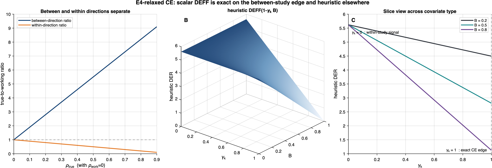
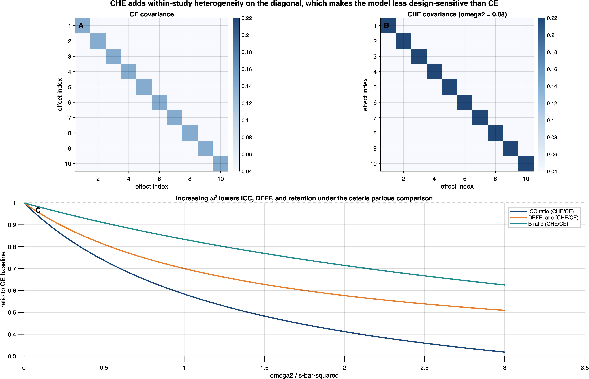

10 E4-Relaxed CE and CHE Extensions
This chapter extends the core CE (correlated effects) results of Parts II–III in two directions: (i) an E4-relaxed CE mean-structure extension, which allows observation-level covariates while retaining the CE variance structure (\(\omega^2=0\)), and (ii) the CHE (correlated-and-hierarchical effects) model, which adds a within-study heterogeneity variance component. Both extensions preserve the structural equivalence of Theorems 1–2 and Corollaries 1–2; the principal changes concern the DER decomposition formulas of Theorem 3.
The key message of this chapter is architectural: the structural equivalence of Theorems 1–2 and Corollaries 1–2 is robust to both extensions. What changes is the quantitative DER decomposition — specifically, how the design effect budget is allocated across parameters. The E4-relaxed CE extension introduces a between-study covariate fraction \(\gamma_k\) that modulates the shrinkage protection for each coefficient, while the CHE extension reduces the total DEFF budget through the \(\bar{s}_j^2 \mapsto \bar{s}_j^2 + \omega^2\) substitution.
10.1 E4-Relaxed CE Extension
10.1.1 Condition (E4) Is Unnecessary for Theorems 1–2
The most important finding from this extension analysis is that exactness condition (E4) — the requirement that all covariates be study-level — was never needed for the likelihood isomorphism (Theorem 1), the sandwich equivalence (Theorem 2), or their corollaries (Corollaries 1–2). The E4-relaxed CE extension allows observation-level covariates \(\mathbf{x}_{ij}\) that may vary within cluster \(j\), while keeping the CE variance structure (\(\omega^2=0\)), and the isomorphism holds exactly under conditions (E1), (E2), (E3), and (E5) alone.
The cluster-level residual vector under the E4-relaxed CE extension is \[ \mathbf{r}_j = \mathbf{y}_j - \mathbf{X}_j \boldsymbol{\beta} - \theta_j \mathbf{1}_{n_j}, \] where \(\mathbf{X}_j\) is the \(n_j \times p\) design matrix for cluster \(j\) with potentially distinct rows \(\mathbf{x}_{ij}^{\intercal}\). Three observations establish the claim:
Residuals are identical in both frameworks. Under (E2) and (E3), the survey and meta-analytic models use the same residual \(\mathbf{r}_j\) regardless of whether \(\mathbf{x}_{ij}\) varies within cluster. The identification \(\sigma_{e,j}^2 = \bar{s}_j^2\) and the unit weights \(\tilde{w}_{ij} = 1\) are the only substitutions needed.
The working covariance does not depend on covariates. Under (E1), \(\boldsymbol{\Sigma}_j^{\mathrm{work}}(\rho) = \bar{s}_j^2[(1-\rho)\mathbf{I}_{n_j} + \rho\,\mathbf{1}_{n_j}\mathbf{1}_{n_j}^{\intercal}]\) is a function of \(\bar{s}_j^2\), \(\rho\), and \(n_j\) only — not of \(\mathbf{X}_j\).
The log-likelihood difference remains \(\boldsymbol{\phi}\)-free. In the proof of Theorem 1 (both Case 1 and Case 2), the only place \(\boldsymbol{\phi}\) enters is through \(\mathbf{r}_j\) in the quadratic form \(\mathbf{r}_j^{\intercal}[\boldsymbol{\Sigma}_j^{\mathrm{work}}]^{-1}\mathbf{r}_j\). Since \(\mathbf{r}_j\) is the same in both frameworks, the \(\boldsymbol{\phi}\)-dependent terms cancel identically, and the remainder \(c\) depends only on \((\bar{s}_j^2, \sigma_{e,j}^2, \rho, n_j)\).
Consequence. All results in Parts II–III that depend only on Theorems 1–2 and Corollaries 1–2 extend immediately to the E4-relaxed CE extension without modification. The only place (E4) matters is in the specific form of the DER decomposition (Theorem 3), where study-level covariates guarantee the especially simple between-direction identity \(R_k = B\) (exact under flat \(\boldsymbol{\beta}\) prior; asymptotically exact under C6). Without (E4), the exact target remains the Schur-complement quantity \(R_k\), but the classical scalar DEFF need not apply outside the between-cluster eigenspace.
10.1.2 E4-Relaxed CE DER Decomposition
The between-study covariate fraction \(\gamma_k\)
To summarize the broad CE / E4-relaxed CE case, we introduce a heuristic between-study fraction of covariate variation.
Definition 10.1 (Between-Study Covariate Fraction) For fixed-effect coefficient \(\beta_k\), \(k = 1, \ldots, p\), define \[ \gamma_k = \frac{\mathrm{Var}_{\mathrm{between}}(x_{jk})}{\mathrm{Var}_{\mathrm{total}}(x_{ijk})} \in [0, 1], \tag{10.1}\] where \(\mathrm{Var}_{\mathrm{between}}(x_{jk}) = \mathrm{Var}(\bar{x}_{\cdot k,j})\) is the between-study variance of the cluster means of \(x_{ijk}\), and \(\mathrm{Var}_{\mathrm{total}}(x_{ijk}) = \mathrm{Var}_{\mathrm{between}} + \mathrm{Var}_{\mathrm{within}}\) is the total variance.
When \(\gamma_k = 1\), covariate \(k\) is purely study-level (\(x_{ij,k} = x_{j,k}\) for all \(i\)), recovering the CE between-direction case. When \(\gamma_k = 0\), covariate \(k\) varies only within studies.
Generalized fixed-effect DER formula
Theorem 10.1 (E4-Relaxed CE DER Decomposition (Heuristic outside the between direction)) Under conditions (E1)–(E3), (E5), and regularity conditions (C1)–(C3), (C5)–(C8), a useful balanced-design summary for the fixed-effect DER under the E4-relaxed CE extension is \[ \mathrm{DER}_{\beta_k}^{\mathrm{E4-relaxed}} \approx \mathrm{DEFF} \cdot (1 - \gamma_k B), \tag{10.2}\] where \(\mathrm{DEFF} = 1 + (\bar{n} - 1)\rho_{\mathrm{true}}\) is the between-direction eigenvalue ratio and \(B = \sigma_\theta^2 / (\sigma_\theta^2 + \bar{s}^2/n)\) is the balanced-case retention weight on the study-specific estimate.
Exactness scope. The formula is exact when \(\gamma_k = 1\) (study-level covariates, recovering the CE case) or in the intercept-only model. For covariates with \(\gamma_k < 1\), the formula uses the between-cluster scalar DEFF where the direction-dependent within-cluster ratio \(\mathrm{DEFF}_{\mathrm{within}} = (1 - \rho_{\mathrm{true}})/(1 - \rho_{\mathrm{work}})\) may be more appropriate; see Section 10.1.2.3 for the full eigenstructure analysis. For rigorous DER values with within-cluster covariates, use the Schur complement definition of \(R_k\) (condition C7, Chapter 11).
The formula interpolates between three stylized cases:
| Covariate type | \(\gamma_k\) | Heuristic summary | Interpretation |
|---|---|---|---|
| Study-level (CE case) | \(1\) | \(\mathrm{DEFF}(1-B)\) | Exact between-direction formula; near-calibrated when \(1-B\) is small |
| Mixed variation | \((0, 1)\) | \(\mathrm{DEFF}(1 - \gamma_k B)\) | Heuristic interpolation only |
| Observation-level only | \(0\) | No universal scalar formula | Within-direction ratio may be closer to \(1-\rho_{\mathrm{true}}\) when \(\rho_{\mathrm{work}}=0\) |
Key practical insight. Observation-level moderators (\(\gamma_k \approx 0\)) receive much less protection from hierarchical pooling than the intercept or study-level covariates. In the independence working model, their relevant ratio can even be closer to the within-direction quantity \(1-\rho_{\mathrm{true}}\) than to the classical scalar DEFF. Practitioners using individual participant data (IPD) meta-analysis with within-study moderators should therefore avoid treating the scalar-DEFF formula as exact for those coefficients.
Critical scope limitation
The formula in Equation 10.2 uses a single scalar DEFF — specifically, the between-cluster eigenvalue ratio \(1 + (n_j - 1)\rho_{\mathrm{true}}\). This scalar DEFF assumption (condition R4 from Lee, 2026b) is exact for covariates whose variation lies in the between-cluster eigenspace (i.e., covariates proportional to \(\mathbf{1}_{n_j}\)), but it is approximate for covariates whose variation lies in the within-cluster eigenspace.
The direction-dependent eigenvalue structure. Under compound symmetry, the eigenvalues of \(\boldsymbol{\Sigma}_j^{\mathrm{true}}\) are:
- Between-cluster direction (along \(\mathbf{1}_{n_j}\)): eigenvalue \(= \sigma^2[1 + (n_j - 1)\rho_{\mathrm{true}}]\)
- Within-cluster directions (\(\perp \mathbf{1}_{n_j}\)): eigenvalue \(= \sigma^2(1 - \rho_{\mathrm{true}})\)
For the working model with \(\rho_{\mathrm{work}}\), the corresponding eigenvalues are:
- Between: \(\sigma^2[1 + (n_j - 1)\rho_{\mathrm{work}}]\)
- Within: \(\sigma^2(1 - \rho_{\mathrm{work}})\)
The eigenvalue ratios (true-to-working, which determine the DEFF in each direction) are:
- Between direction: \(\frac{1 + (n_j - 1)\rho_{\mathrm{true}}}{1 + (n_j - 1)\rho_{\mathrm{work}}} = \mathrm{DEFF}_{\mathrm{between}}\)
- Within direction: \(\frac{1 - \rho_{\mathrm{true}}}{1 - \rho_{\mathrm{work}}} = \mathrm{DEFF}_{\mathrm{within}}\)
When \(\rho_{\mathrm{work}} = 0\) (the standard RVE setting), these simplify to:
- Between: \(\mathrm{DEFF}_{\mathrm{between}} = 1 + (n_j - 1)\rho_{\mathrm{true}} = \mathrm{DEFF}\)
- Within: \(\mathrm{DEFF}_{\mathrm{within}} = 1 - \rho_{\mathrm{true}} < 1\) for \(\rho_{\mathrm{true}} > 0\)
Consequence for purely within-cluster covariates. For a covariate with \(\gamma_k = 0\) and \(\rho_{\mathrm{work}} = 0\), the Equation 10.2 formula predicts \(\mathrm{DER}_{\beta_k} = \mathrm{DEFF} = 1 + (\bar{n}-1)\rho_{\mathrm{true}}\), but the true direction-specific ratio is closer to \(\mathrm{DEFF}_{\mathrm{within}} = 1 - \rho_{\mathrm{true}} < 1\). The scalar formula uses the between-cluster eigenvalue ratio where the within-cluster ratio is relevant.
Theorem-level exactness requires the Schur complement definition of \(R_k\). The identifying-variation fraction \(R_k\) in its full Schur complement form (see Chapter 11, condition C7) accounts for the direction-dependent DEFF by projecting onto the appropriate eigenspaces. The simplified variance-ratio formula for \(\gamma_k\) in Equation 10.1 is an approximation that is exact when:
- All covariate variation is study-level (\(\gamma_k = 1\), the CE case); or
- The model is intercept-only; or
- The design is balanced and covariates are orthogonal between the between- and within-cluster subspaces.
For general E4-relaxed CE meta-regression with mixed between/within covariates, the exact DER requires the full matrix-based definition of \(R_k\).
Figure 10.1 visualizes this directional mismatch. The first panel contrasts the between- and within-direction eigenvalue ratios under \(\rho_{\mathrm{work}}=0\), showing that the classical scalar DEFF captures only the between-cluster direction while the within-cluster ratio falls below 1. The remaining panels display the heuristic surface \(\mathrm{DEFF}(1-\gamma_k B)\) from Equation 10.2 and its slices across \(\gamma_k\), illustrating how the formula interpolates between the two extreme cases identified in the eigenstructure analysis above. Compare with the eigenspace geometry introduced in Figure 2.1 and the DEFF surface in Figure 7.1.

10.1.3 Conservation Under the E4-Relaxed CE Extension
The conservation law of Theorem 3(c) continues to hold for the overall intercept \(\mu\), since \(\mu\) is identified entirely from between-cluster variation (\(\gamma_\mu = 1\)):
\[ \mathrm{DER}_\mu + \mathrm{DER}_\theta^{\mathrm{cond}} = \mathrm{DEFF}(1-B) + B \cdot \mathrm{DEFF} = \mathrm{DEFF}. \tag{10.3}\]
For other fixed-effect coefficients with \(\gamma_k < 1\), the “sum rule” changes: \[ \mathrm{DER}_{\beta_k}^{\mathrm{HE}} + \mathrm{DER}_\theta^{\mathrm{cond}} = \mathrm{DEFF}(1 - \gamma_k B) + B \cdot \mathrm{DEFF} = \mathrm{DEFF}[1 + B(1 - \gamma_k)]. \tag{10.4}\]
When \(\gamma_k < 1\), the sum exceeds DEFF. The interpretation is that the DEFF “budget” concept (Theorem 3(c)) applies to the intercept only; for within-cluster covariates, the design effect and the shrinkage act on different variance components and do not trade off against each other.
10.2 CHE Extension
10.2.1 CHE Model Specification
The correlated-and-hierarchical effects (CHE) model adds a within-study heterogeneity component to the CE model:
Level 1 (within-study): \[ y_{ij} = \mathbf{x}_{ij}^{\intercal}\boldsymbol{\beta} + \theta_j + e_{ij} + \varepsilon_{ij}, \tag{10.5}\] where \(e_{ij} \sim \textsf{N}(0, \omega^2)\) captures within-study true-effect heterogeneity and \(\varepsilon_{ij} \sim \textsf{N}(0, s_{ij}^2)\) is the sampling error.
Level 2 (between-study): \[ \theta_j \sim \textsf{N}(0, \sigma_\theta^2). \tag{10.6}\]
The key distinction from CE: the CE model assumes that all effect sizes within study \(j\) share a common true effect \(\theta_j\), differing only by sampling error. The CHE model allows each effect size to have its own true effect \(\theta_j + e_{ij}\), where \(e_{ij}\) represents within-study heterogeneity beyond sampling error.
10.2.2 Conditional and Marginal Covariances
Conditional covariance (given \(\theta_j\)): \[ \mathrm{Var}(\mathbf{y}_j \mid \theta_j) = (\bar{s}_j^2 + \omega^2)\,\mathbf{I}_{n_j}, \tag{10.7}\] since \(e_{ij}\) and \(\varepsilon_{ij}\) are independent across \(i\) given \(\theta_j\).
Marginal covariance (integrating out \(\theta_j\)): \[ \boldsymbol{\Sigma}_j^{\mathrm{CHE}} = (\bar{s}_j^2 + \omega^2)\,\mathbf{I}_{n_j} + \sigma_\theta^2 \cdot \mathbf{1}_{n_j}\mathbf{1}_{n_j}^{\intercal}. \tag{10.8}\]
This matrix has diagonal elements \(\bar{s}_j^2 + \omega^2 + \sigma_\theta^2\) and off-diagonal elements \(\sigma_\theta^2\).
The compound-symmetric factorization of the CHE marginal covariance is: \[ \boldsymbol{\Sigma}_j^{\mathrm{CHE}} = (\bar{s}_j^2 + \omega^2 + \sigma_\theta^2)\!\left[(1 - \rho_j^{\mathrm{CHE}})\,\mathbf{I}_{n_j} + \rho_j^{\mathrm{CHE}} \cdot \mathbf{1}_{n_j}\mathbf{1}_{n_j}^{\intercal}\right], \tag{10.9}\] where the CHE intraclass correlation (study-specific via \(\bar{s}_j^2\); see Table 1.9) is \[ \rho_j^{\mathrm{CHE}} = \frac{\sigma_\theta^2}{\bar{s}_j^2 + \omega^2 + \sigma_\theta^2}. \tag{10.10}\]
Verification. The diagonal of the factorized form is \((\bar{s}_j^2 + \omega^2 + \sigma_\theta^2)[(1-\rho_j^{\mathrm{CHE}}) + \rho_j^{\mathrm{CHE}}] = \bar{s}_j^2 + \omega^2 + \sigma_\theta^2\), matching the diagonal of Equation 10.8. The off-diagonal is \((\bar{s}_j^2 + \omega^2 + \sigma_\theta^2) \cdot \rho_j^{\mathrm{CHE}} = \sigma_\theta^2\), also matching. \(\checkmark\)
Note on V1 error. The V1 document incorrectly used \((\bar{s}_j^2 + \omega^2)\) as the leading scalar in the CS factorization. This was algebraically wrong: the leading scalar of a compound-symmetric matrix \(\sigma^2[(1-\rho)\mathbf{I} + \rho\,\mathbf{11}^{\intercal}]\) must equal the diagonal element \(\sigma^2\), which for the CHE marginal covariance is \(\bar{s}_j^2 + \omega^2 + \sigma_\theta^2\) (not \(\bar{s}_j^2 + \omega^2\)). The V1 raw matrix form in Equation 10.8 was correct; only the CS factorization was wrong. This error was identified during internal review.
10.2.3 Parameter Substitution Principle
The corrected CHE covariance Equation 10.9 is identical in form to the CE covariance (Definition 2) with the substitution \[ \bar{s}_j^2 \;\longmapsto\; \bar{s}_j^2 + \omega^2. \tag{10.11}\]
This substitution carries all CE results over to CHE, subject to the following qualifications:
Rigorous when \(\omega^2\) is known (or conditioned upon). If \(\omega^2\) is treated as a fixed, known quantity, the CHE model is literally a CE model with inflated Level 1 variance \(\sigma_{e,\mathrm{total}}^2 = \bar{s}_j^2 + \omega^2\). All CE theorems apply without modification.
Conditional when \(\omega^2\) is estimated. When \(\omega^2\) is a free parameter estimated from the data (the typical CHE implementation), the CE results hold conditionally on each fixed value of \(\omega^2\). The posterior over \((\boldsymbol{\beta}, \boldsymbol{\theta}, \sigma_\theta^2, \omega^2)\) factorizes such that, for each fixed \(\omega^2\), the conditional posterior over \((\boldsymbol{\beta}, \boldsymbol{\theta}, \sigma_\theta^2)\) is exactly the CE posterior with \(\bar{s}_j^2\) replaced by \(\bar{s}_j^2 + \omega^2\).
When \(\omega_j^2\) varies by study. If within-study heterogeneity varies across studies (as in some CHE implementations), the substitution becomes study-specific: \(\bar{s}_j^2 \mapsto \bar{s}_j^2 + \omega_j^2\). The isomorphism still holds cluster by cluster, but the notation must track the study-specific total Level 1 variance.
10.2.4 Modified Exactness Condition
The CHE model requires a modified version of condition (E2):
(E2’) Total within-cluster variance. The total Level 1 variance \(\sigma_{e,\mathrm{total}}^2 \equiv \bar{s}_j^2 + \omega^2\) replaces \(\bar{s}_j^2\) in the variance identification. The survey model’s within-cluster variance \(\sigma_{e,j}^2\) is identified with \(\bar{s}_j^2 + \omega^2\) (rather than \(\bar{s}_j^2\)).
With this modification, the CHE isomorphism holds under (E1), (E2’), (E3), and (E5).
10.2.5 Reduced Design Sensitivity Under CHE
Since \(\omega^2 > 0\) enters the ICC denominator, the CHE intraclass correlation is strictly smaller than the CE correlation: \[ \rho_j^{\mathrm{CHE}} = \frac{\sigma_\theta^2}{\bar{s}_j^2 + \omega^2 + \sigma_\theta^2} < \frac{\sigma_\theta^2}{\bar{s}_j^2 + \sigma_\theta^2} = \rho_j^{\mathrm{CE}}, \tag{10.12}\] where the inequality holds at the same \(\sigma_\theta^2\), for each study \(j\).
The inequality \(\mathrm{DEFF}^{\mathrm{CHE}} < \mathrm{DEFF}^{\mathrm{CE}}\) holds as a structural parameter comparison at the same \(\sigma_\theta^2\). In practice, fitting CE and CHE models to the same data may yield different estimates of \(\sigma_\theta^2\) (because \(\omega^2\) absorbs some of the variance that CE attributes to \(\sigma_\theta^2\)). The empirical DEFF comparison therefore depends on the data, not only on the structural formulas. This qualification was identified during internal review.
The DEFF inequality implies:
\[ \mathrm{DEFF}_j^{\mathrm{CHE}} = 1 + (n_j - 1)\rho_j^{\mathrm{CHE}} < 1 + (n_j - 1)\rho_j^{\mathrm{CE}} = \mathrm{DEFF}_j^{\mathrm{CE}}. \tag{10.13}\]
Similarly, the CHE shrinkage factor is reduced: \[ B^{\mathrm{CHE}} = \frac{\sigma_\theta^2}{\sigma_\theta^2 + (\bar{s}_j^2 + \omega^2)/n} < \frac{\sigma_\theta^2}{\sigma_\theta^2 + \bar{s}_j^2/n} = B^{\mathrm{CE}}. \tag{10.14}\]
Practical implication. If the true data-generating process is CHE but the analyst fits a CE model (ignoring \(\omega^2\)), the CE model will over-attribute variance to the between-study component \(\sigma_\theta^2\). This inflates \(\rho^{\mathrm{CE}}\) and hence \(\mathrm{DEFF}^{\mathrm{CE}}\), leading to overstated design sensitivity. The DER computed under CE will be systematically larger than the DER under the correct CHE model.
Figure 10.2 provides a geometric view of this reduction mechanism. Holding \(\sigma_\theta^2\), \(\bar{s}^2\), and \(n\) fixed, the figure shows how introducing \(\omega^2 > 0\) inflates the diagonal variance of the marginal covariance while leaving the off-diagonal covariance (which depends only on \(\sigma_\theta^2\)) unchanged. The net effect is a lower ICC, a lower DEFF, and a lower retention weight \(B\) — precisely the inequalities established in Equation 10.12 through Equation 10.14.

10.2.6 CHE DER Formulas
All CE DER formulas have CHE counterparts via the substitution Equation 10.11. In the balanced intercept-only case:
Fixed-effect DER: \[ \mathrm{DER}_\mu^{\mathrm{CHE}} = \mathrm{DEFF}^{\mathrm{CHE}} \cdot (1 - B^{\mathrm{CHE}}). \tag{10.15}\]
Random-effect DER (conditional): \[ \mathrm{DER}_{\theta,j}^{\mathrm{cond,CHE}} = B_j^{\mathrm{CHE}} \cdot \mathrm{DEFF}_j^{\mathrm{CHE}}. \tag{10.16}\]
Conservation law: \[ \mathrm{DER}_\mu^{\mathrm{CHE}} + \mathrm{DER}_\theta^{\mathrm{cond,CHE}} = \mathrm{DEFF}^{\mathrm{CHE}} < \mathrm{DEFF}^{\mathrm{CE}}. \tag{10.17}\]
The conservation budget is reduced under CHE: the total design sensitivity (summing over fixed and random effects) is smaller when within-study heterogeneity is explicitly modeled.
For the E4-relaxed CE generalization with observation-level covariates under CHE: \[ \mathrm{DER}_{\beta_k}^{\mathrm{CHE}} = \mathrm{DEFF}^{\mathrm{CHE}} \cdot (1 - \gamma_k B^{\mathrm{CHE}}), \tag{10.18}\] with the same scope limitations as Section 10.1.2.3 regarding within-cluster covariates.
10.2.7 CE vs. CHE Summary
Table 10.2 summarizes the key differences.
| Property | CE | CHE |
|---|---|---|
| Level 1 variance | \(\bar{s}_j^2\) | \(\bar{s}_j^2 + \omega^2\) |
| ICC | \(\rho_j^{\mathrm{CE}} = \sigma_\theta^2/(\bar{s}_j^2 + \sigma_\theta^2)\) | \(\rho_j^{\mathrm{CHE}} = \sigma_\theta^2/(\bar{s}_j^2 + \omega^2 + \sigma_\theta^2)\) |
| DEFF | \(1 + (n_j-1)\rho_j^{\mathrm{CE}}\) | \(1 + (n_j-1)\rho_j^{\mathrm{CHE}}\) |
| Shrinkage \(B\) | \(\sigma_\theta^2/(\sigma_\theta^2 + \bar{s}^2/n)\) | \(\sigma_\theta^2/(\sigma_\theta^2 + (\bar{s}^2 + \omega^2)/n)\) |
| DER\(_\mu\) | \(\mathrm{DEFF}^{\mathrm{CE}}(1-B^{\mathrm{CE}})\) | \(\mathrm{DEFF}^{\mathrm{CHE}}(1-B^{\mathrm{CHE}})\) |
| DER\(_\theta^{\mathrm{cond}}\) | \(B^{\mathrm{CE}} \cdot \mathrm{DEFF}^{\mathrm{CE}}\) | \(B^{\mathrm{CHE}} \cdot \mathrm{DEFF}^{\mathrm{CHE}}\) |
| Conservation sum | \(= \mathrm{DEFF}^{\mathrm{CE}}\) | \(= \mathrm{DEFF}^{\mathrm{CHE}} < \mathrm{DEFF}^{\mathrm{CE}}\) |
| Isomorphism conditions | (E1)–(E3), (E5) | (E1), (E2’), (E3), (E5) |
| Modified condition | — | (E2’): \(\bar{s}_j^2 \mapsto \bar{s}_j^2 + \omega^2\) |
| New parameter | — | \(\omega^2\) (within-study heterogeneity) |
| Closed-form DER | Yes | Yes (conditional on fixed \(\omega^2\)) |
| Applicable theorems | Theorems 1–3, Corollaries 1–2 | Same (via \(\bar{s}_j^2 + \omega^2\) substitution) |
10.3 Comprehensive Model Comparison: CE, E4-Relaxed CE, CHE
Table 10.3 integrates the results of this chapter with the CE baseline from Part III.
| Property | CE | E4-relaxed CE | CHE |
|---|---|---|---|
| Isomorphism | Exact: (E1)–(E3), (E5) | Exact: (E1)–(E3), (E5) | Exact: (E1), (E2’), (E3), (E5) |
| Sandwich equiv. | Exact | Exact | Exact |
| Posterior equiv. | Exact | Exact | Exact |
| CCC equiv. | Exact | Exact | Exact |
| DER\(_\mu\) | \(\mathrm{DEFF}(1-B)\) | Same as CE for the intercept | \(\mathrm{DEFF}^{\mathrm{CHE}}(1-B^{\mathrm{CHE}})\) |
| DER\(_{\beta_k}\) | Exact in the between direction | Heuristic \(\mathrm{DEFF}(1-\gamma_k B)\) outside the between direction | CHE analogue with the same scope caveats |
| DER\(_\theta^{\mathrm{cond}}\) | \(B \cdot \mathrm{DEFF}\) | Same as CE | \(B^{\mathrm{CHE}} \cdot \mathrm{DEFF}^{\mathrm{CHE}}\) |
| Conservation | \(= \mathrm{DEFF}\) | \(= \mathrm{DEFF}\) (intercept) | \(= \mathrm{DEFF}^{\mathrm{CHE}} < \mathrm{DEFF}^{\mathrm{CE}}\) |
| Dropped condition | — | (E4) | — |
| Modified condition | — | — | (E2’) |
| New quantity | — | Heuristic descriptor \(\gamma_k\) | \(\omega^2\) |
| Scalar DEFF scope | Exact when \(\gamma_k = 1\); approximate when \(\gamma_k < 1\) | Exact for \(\gamma_k = 1\); approximate for \(\gamma_k < 1\) | Same as CE/HE |
| DER formula status | Exact in the between direction | Approximate outside the between direction (see Section 10.1.2.3) | Conditional on fixed/common \(\omega^2\) |
Key takeaway. The structural equivalence (Theorems 1–2, Corollaries 1–2) is robust across the CE baseline, the E4-relaxed CE mean-structure extension, and CHE. The differences are confined to the DER decomposition formulas, which depend on the model’s variance components and on how each coefficient loads onto the between- and within-cluster eigenspaces.